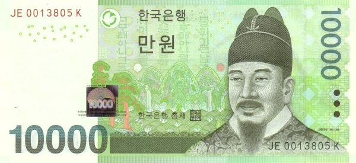
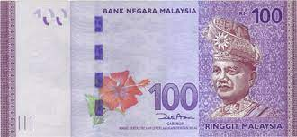

Currency Conversion
This page will help you to convert currency between Won and Ringgit. I know not all people that can instant convert the currency with the accurate answer. Travelers often use currency converters to plan their expenses when visiting countries with different currencies. This helps them budget effectively and understand the purchasing power of their money in the destination currency.
The Won is the official currency of South Korea. Its ISO currency code is KRW. The symbol for the South Korean Won is ₩. The Won is subdivided into 100 jeon. However, the jeon is not widely used in practice. The Bank of Korea is the central bank responsible for issuing and managing the South Korean Won. Banknotes and coins come in various denominations, with different designs and colors. Commonly used denominations include 1,000, 5,000, and 10,000 Won banknotes. The South Korean Won is widely used in South Korea for daily transactions, trade, and economic activities. South Korea has one of the largest and most technologically advanced economies in Asia.
The Ringgit is the official currency of Malaysia. Its ISO currency code is MYR. The symbol for the Malaysian Ringgit is RM. The Ringgit is subdivided into 100 sen. The central bank of Malaysia, Bank Negara Malaysia, is responsible for issuing and regulating the Malaysian Ringgit. Malaysian Ringgit banknotes and coins come in various denominations, each with distinctive designs. Common banknote denominations include 1, 5, 10, 20, 50, and 100 Ringgit. The Malaysian Ringgit is the official currency used in Malaysia. Malaysia has a diverse and growing economy with significant contributions from various sectors such as manufacturing, services, and tourism.
You can explore this website to convert any amount of currency in Won or Ringgit.
I hope this website will help you.
 